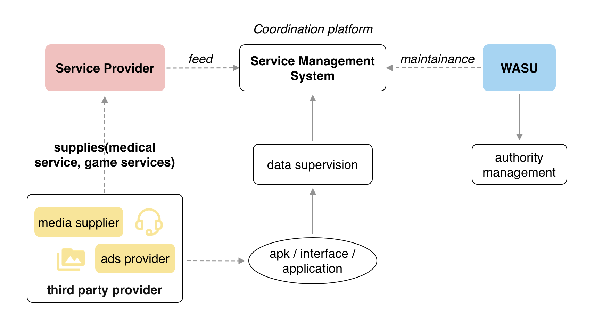

As a service integrator, the Service Management System is tasked with managing and facilitating access to both internal and external services. This involves overseeing the unified service provider management process, which includes admission and review procedures for service providers. Additionally, the system is responsible for developing and implementing service ingress and egress specifications to ensure that service delivery is efficient and effective. Its ultimate goal is to provide stable and reliable service data that can support the basic operations of both products and users.
Role: UX designer
Duration: 8 weeks
Goal:
As a UX designer joined the team in middle of the project, our design process began with a backgournd study, including the people, the objectives and what has been done. Followed by that, we further investigated into the existing systems that have familiar goals that aim to organize a large amount of data and build things with that. This is to understand what interaction our target users are familiar to in such a complex system.
The kick-off meeting was taken together by the product manager, UX designers, and developers. Before the meeting, UX designers have analysed the product and listed several questions, as well as the usability problems we considered rather vital to be improved. With the list, we were able to understand the project better by checking the design priority and feasibility with other team members line by line.
The goal of the kick-off meeting is to ensure that everyone is on the same page of the project. Apart from the introduction to the circumstances, we also made a shared knowledge on the objectives and deliverables, the responsibilities of each team members, and the criteria that can measure our achievement. We further concluded a conceptual model to define the feature of the product.
One of the biggest challenges UX designers face in this project is translating business value into the user experience. The design should adapt to the whole system rather than propose a solution for a single scenario. User researchers and UX designers have fewer opportunities to talk to users than the usual design process we're used to. Therefore, beforehand we must have a fairly comprehensive understanding of the existing system, which is critical for us to anticipate demand and control overall availability and consistency.
According to the definition, we concluded three main types of systems that would be analyse-worthy to our project:
Our goals in reviewing these three types are as follows:
Another great discover is the frame of where the users edit the contents. We analysed the pros and cons of the popular types of frames to feature the best construction for our users.
After referring to the existing solutions for service and management, we define the product architecture based on user scenarios in three aspects.
As the pre-investigation came to an end, we have established the framework and interaction for the service management system and are ready to move into the design phase of the overall process. The first step in this phase was to develop a framework design that would provide a foundation for subsequent weekly-scale component designs. One of the primary challenges we faced during the creation of this framework was categorizing the various functions in a clear and concise manner so that they won't confuse the users.
In addition to addressing the organization of functions, we also considered several interaction principles in terms of visual presentation. These principles included visible states for input boxes, button hiding based on usage priority, and left-aligned text information to accommodate modern reading habits. By incorporating these principles into the design, we aimed to create an interface that was both intuitive and efficient for users to operate.
In the following 5 weeks, we made integration into the existing developing cycle in which producing components week by week. Base on the research beforehand, the design process of each component progressed smoothly. Since the interaction style of these components is following the same tone with the framework, it didn't require considerable further investigation on each design as well. Here are some of the components, Data Present and Role Editor, we designed on a weekly basis.
In the following design stage, we implement various strategies to improve user data processing, monitoring, and management capabilities, including highlighting abnormal data in red, using list labels, and employing a strengthened concept of member roles.
We the UX designers worked together with the product team and development team to optimise the user experience of the web system. According to our experience, some project teams only realise their need for UX designers during the halfway of product development. Interestingly, in this project, we were asked to cooperate with the development team in the middle of development and release new designs weekly. The process finally worked out well by deconstructing the whole design of the Content Tool into segments, and it kept the expandability for further features as well.